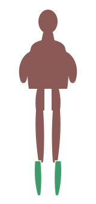

Use
One still photograph on the session stage. Letterboxed demo video on demand. One static scrim. A shadow on the stage and on sheets. SVG anatomy with a written load label.
Chart language · anatomy stays SVG
Ivory is the default stroke. Chartreuse appears only on the series the member selected.

Quads · productive load
One still photograph on the session stage. Letterboxed demo video on demand. One static scrim. A shadow on the stage and on sheets. SVG anatomy with a written load label.
Neon glow, glass cards, looping heatmap spin, background video, WebGL bodies, and chartreuse used as weather across the whole screen.